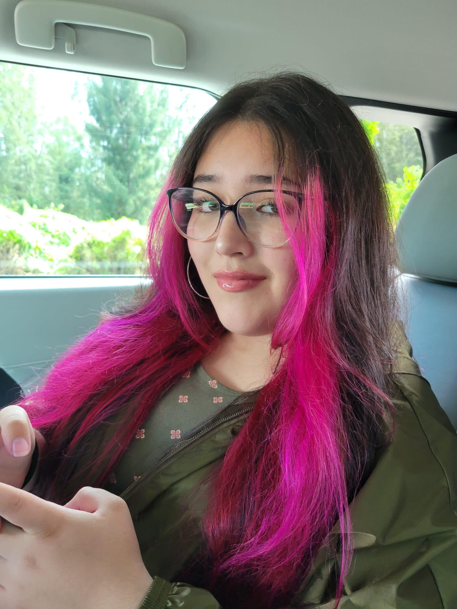

Luciana Mostajo is an animator/video editor from Miami, Florida, born in La Paz, Bolivia She completed her associates degree in Miami Dade College and is currently an Art & Technology student at New World School of the Arts/University of Florida. She aspires to be a graphic effects artist in the music video industry.